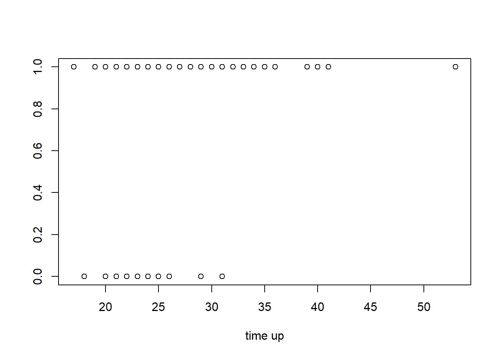
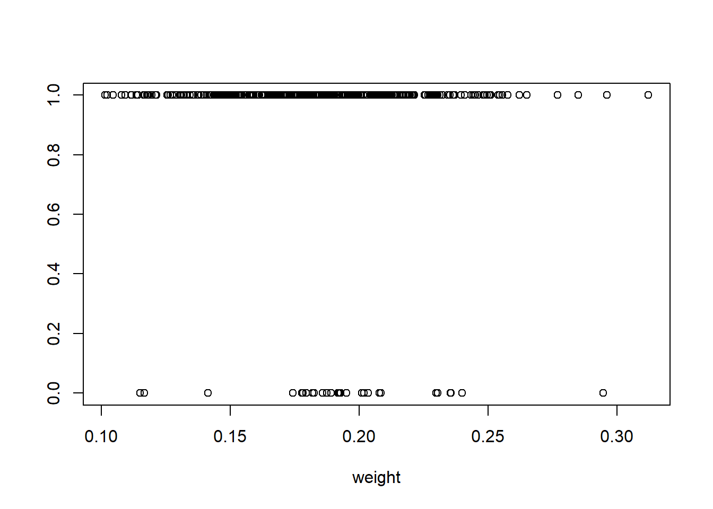
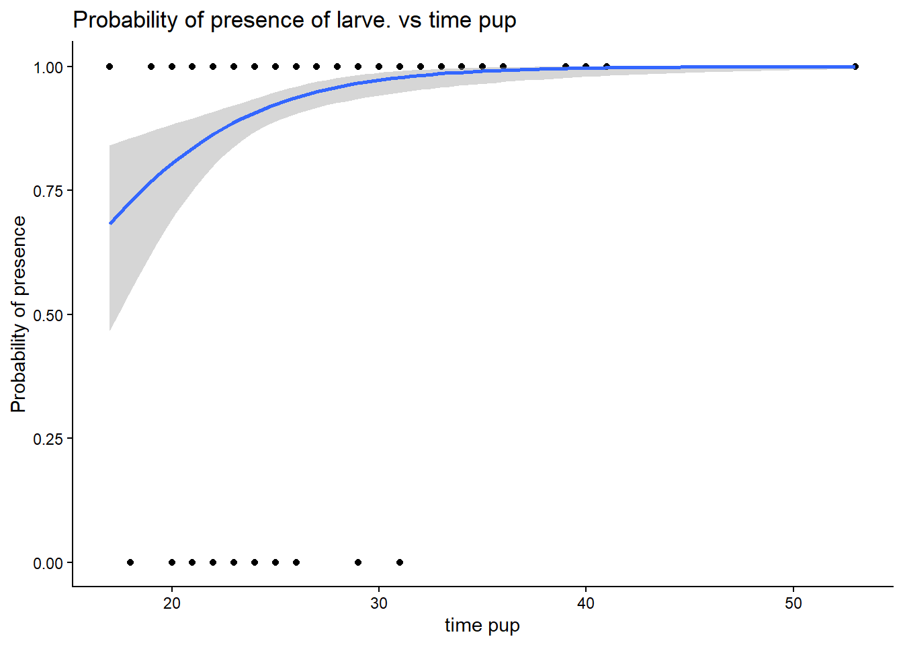
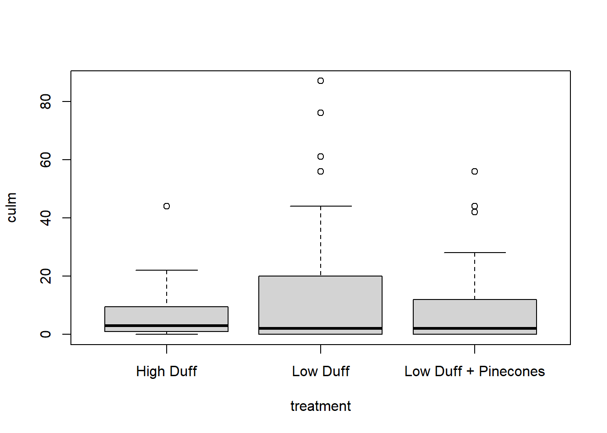

Warning: package 'tidyverse' was built under R version 4.4.2
Warning: package 'ggplot2' was built under R version 4.4.3
Warning: package 'tidyr' was built under R version 4.4.3
Warning: package 'purrr' was built under R version 4.4.3
── Attaching core tidyverse packages ──────────────────────── tidyverse 2.0.0 ──
✔ dplyr 1.1.4 ✔ readr 2.1.5
✔ forcats 1.0.0 ✔ stringr 1.5.1
✔ ggplot2 4.0.0 ✔ tibble 3.2.1
✔ lubridate 1.9.3 ✔ tidyr 1.3.1
✔ purrr 1.1.0
── Conflicts ────────────────────────────────────────── tidyverse_conflicts() ──
✖ dplyr::filter() masks stats::filter()
✖ dplyr::lag() masks stats::lag()
ℹ Use the conflicted package (<http://conflicted.r-lib.org/>) to force all conflicts to become errors
library(car)
Warning: package 'car' was built under R version 4.4.2
Loading required package: carData
Warning: package 'carData' was built under R version 4.4.2
Attaching package: 'car'
The following object is masked from 'package:dplyr':
recode
The following object is masked from 'package:purrr':
some
library(performance)
Warning: package 'performance' was built under R version 4.4.3
Butterfly color
Mayekar et al (2017) studied some potential determinants of color (green vs brown) of a tropical butterfly species. A laboratory population was established, and newly hatched larvae were placed in a growth chamber set at either 60% or 85% relative humidity. Resulting pupae were recorded for colour, time to pupation, pupal weight and sex.
We will use their data to model green vs brown pupae against the two continuous predictors (time to pupation, pupal weight) and the one categorical predictor (sex). We will only use data from the low humidity treatment as brown pupae were very uncommon at high humidity.
Mayekar, H. V. & Kodandaramaiah, U. (2017). Pupal colour plasticity in a tropical butterfly, Mycalesis mineus (Nymphalidae: Satyrinae). PLoS One, 12, e0171482.
The paper is here, and Figure 1 is an excellent image of the divergent colour phenotypes.
Coding notes: - colnum: binary variable coded as 0 = brown pupae, 1 = green pupae - sex: categorical factor with two levels (male/female) - timepup, weight: continuous predictors - rh: relative humidity treatment (factor with “low” and “high”)
Import mayekar data file (mayekar.csv) and examine it.
Examine the levels of the ‘rh; relative humidity’ variable. Create subset of the low-humidity treatment (rh=low)
rh colour timepup subst sex weight colnum
1 low green 19 leaf male 0.1590 1
2 low green 21 leaf female 0.2511 1
3 low green 19 leaf male 0.2289 1
4 low green 21 off-leaf male 0.1960 1
5 low green 21 off-leaf male 0.1178 1
6 low green 21 off-leaf female 0.2312 1
levels(as.factor(df$rh))
[1] "high" "low"
# Subset data where rh == "low"df_low <-subset(df, rh =="low")# Verify the subsethead(df_low)
rh colour timepup subst sex weight colnum
1 low green 19 leaf male 0.1590 1
2 low green 21 leaf female 0.2511 1
3 low green 19 leaf male 0.2289 1
4 low green 21 off-leaf male 0.1960 1
5 low green 21 off-leaf male 0.1178 1
6 low green 21 off-leaf female 0.2312 1
summary(df_low)
rh colour timepup subst
Length:388 Length:388 Min. :17.0 Length:388
Class :character Class :character 1st Qu.:23.0 Class :character
Mode :character Mode :character Median :26.0 Mode :character
Mean :26.9
3rd Qu.:29.0
Max. :53.0
sex weight colnum
Length:388 Min. :0.1014 Min. :0.0000
Class :character 1st Qu.:0.1608 1st Qu.:1.0000
Mode :character Median :0.1835 Median :1.0000
Mean :0.1849 Mean :0.9278
3rd Qu.:0.2086 3rd Qu.:1.0000
Max. :0.3121 Max. :1.0000
Make simple plots for cont. predictors of timepup and weight
# Abundance vs water contentplot(colnum ~ timepup, data = df_low,xlab ='time up', ylab ='')

# Water content vs presence/absenceplot(colnum ~ weight, data = df_low,xlab ='weight', ylab ='')

Fit full glm with 3 way-interaction.
# Fit logistic regressionlogit.reg <-glm(colnum ~ weight * timepup * sex,data = df_low,family =binomial(link ="logit"))# Model summarysummary(logit.reg)
Call:
glm(formula = colnum ~ weight * timepup * sex, family = binomial(link = "logit"),
data = df_low)
Coefficients:
Estimate Std. Error z value Pr(>|z|)
(Intercept) -4.3574 11.5352 -0.378 0.706
weight 6.0282 55.4602 0.109 0.913
timepup 0.3200 0.4704 0.680 0.496
sexmale -11.9309 16.9166 -0.705 0.481
weight:timepup -0.4882 2.2895 -0.213 0.831
weight:sexmale 67.8920 87.3741 0.777 0.437
timepup:sexmale 0.3403 0.6760 0.503 0.615
weight:timepup:sexmale -1.9455 3.5268 -0.552 0.581
(Dispersion parameter for binomial family taken to be 1)
Null deviance: 201.14 on 387 degrees of freedom
Residual deviance: 180.92 on 380 degrees of freedom
AIC: 196.92
Number of Fisher Scoring iterations: 6
Check for collinearity
vif(logit.reg)
there are higher-order terms (interactions) in this model
consider setting type = 'predictor'; see ?vif
# Fit logistic regressionlogit.reg_final <-glm(colnum ~ timepup_c,data = df_low,family =binomial(link ="logit"))# Model summary#summary(logit.reg_final)anova(logit.reg_scale, logit.reg_final, test ="Chisq")
Analysis of Deviance Table
Model 1: colnum ~ weight_c * timepup_c * sex
Model 2: colnum ~ timepup_c
Resid. Df Resid. Dev Df Deviance Pr(>Chi)
1 380 180.92
2 386 184.31 -6 -3.3855 0.7591
Check assumptions for the final model. In other words, get and plot residuals - focus on deviance residuals plot. You can also use simulated residuals in the DHARMa package.
ED <-resid(logit.reg_final, type ="deviance")mu <-predict(logit.reg_final, type ="response")df_low_2 <-cbind(df_low, ED, mu)g1 <-ggplot(df_low_2, aes(x = mu, y = ED)) +geom_point() +ggtitle("Deviance residuals vs. Fitted") +theme_bw()g2 <-ggplot(df_low_2, aes(x = timepup_c, y = ED)) +geom_point() +ggtitle("Deviance residuals vs. scaled time pup") +theme_bw()ggpubr::ggarrange(g1, g2)
Get odds ratio with CI and interpret the results.
Odds ratio > 1: predictor increases the odds of presence
Odds ratio < 1: predictor decreases the odds of presence
the timepup increases the odds of presence
exp(logit.reg_final$coefficient[1])
(Intercept)
18.15391
# Odds ratios with 95% confidence intervalsexp(confint.default(logit.reg_final))
# Logistic curve for time pupggplot(df_low, aes(x = timepup, y = colnum)) +geom_point() +stat_smooth(method ="glm", method.args =list(family=binomial), se =TRUE) +xlab("time pup") +ylab("Probability of presence") +ggtitle("Probability of presence of larve. vs time pup") +theme_classic()
`geom_smooth()` using formula = 'y ~ x'

Post-fire ecology of wiregrass
Fill et al (2021) studied the effect of duff (leaf litter) on the post-fire ecology of wiregrass (Aristida beyrichiana) in a section of pine savanna. They sampled 99 plants in an area of 0.1 km2, recorded plant basal area and allocated each plant to one of three treatments: high duff, low duff, low duff with added pine cones. They then burnt the area and five months later, counted the number of culms on each plant. We will model numbers of culms per plant against basal area and duff treatment using each plant as the unit of analysis.
The paper is here and Figure 1 has relevant photos.
Coding notes: - culm: integer count of culms - treatment: categorical factor with three levels (high duff, low duff, low duff + cones) - basalarea: continuous predictor
# Water content vs presence/absenceboxplot(culm ~ treatment, data = df_2,xlab='treatment', ylab ='culm')

Fit poisson glm with basalarea, treatment, and their interaction as predictors
# Ensure treatment is a factordf_2$treatment <-as.factor(df_2$treatment)#glm.p <- glm(culm ~ basalarea + treatment, data = df_2, family = poisson)# Summary#summary(glm.p)levels(df_2$treatment)